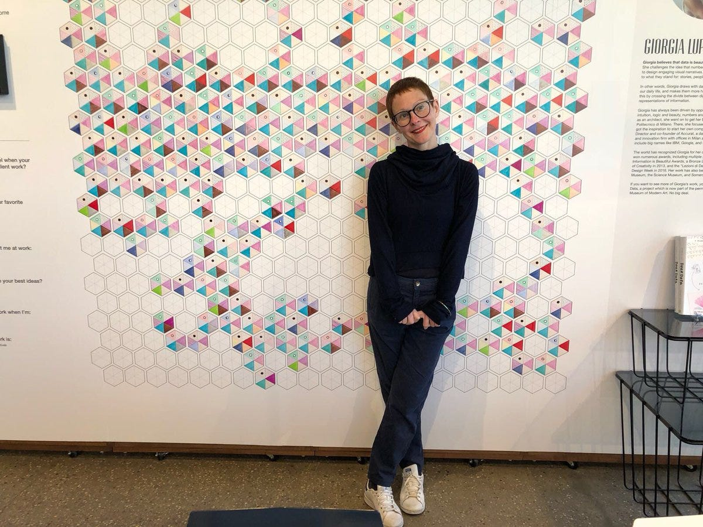
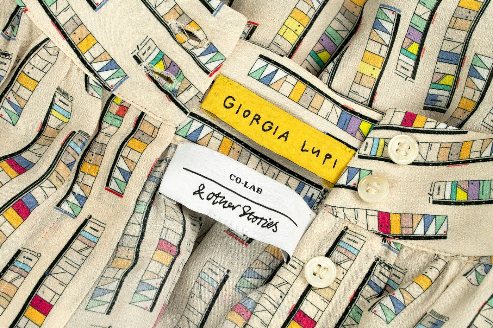
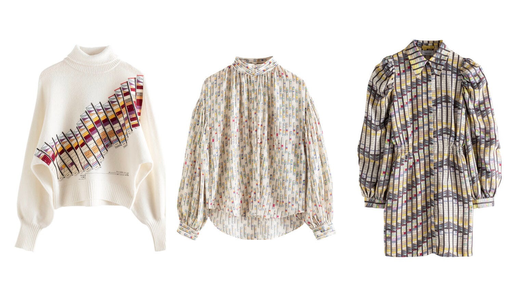
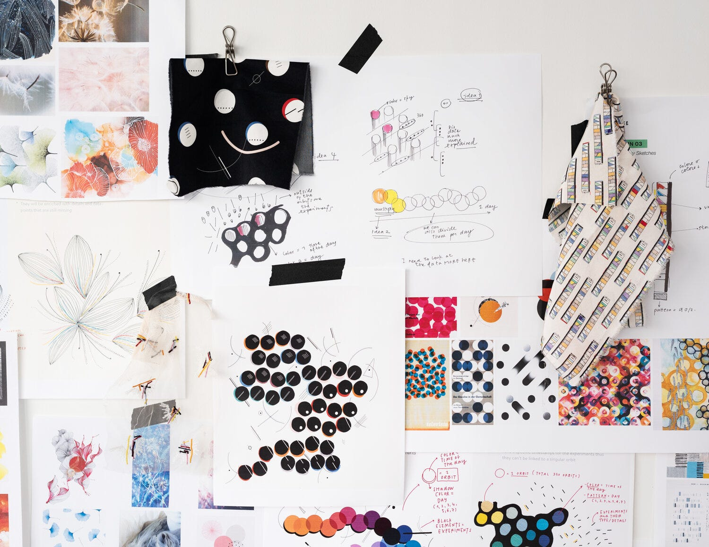
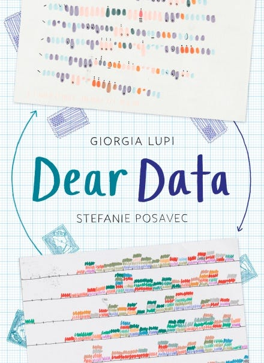
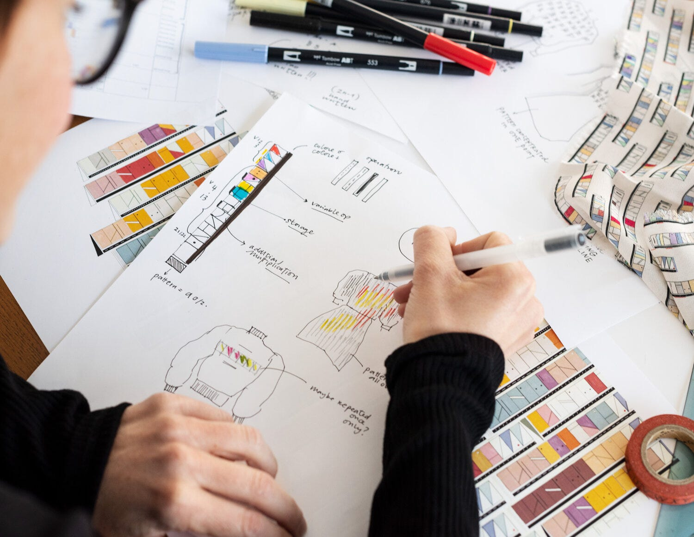

Data Science Artists Like Giorgia Lupi
Example of a great woman doing amazing works with tech, data and art


Being part of an initiative that involves people helps you discover great talent and the main feature of the internet is its ability to connect people. I will never be tired to remind you about this capability of the internet to connect people from different horizons with different sets of skills, connections that could lead to another meaningful work that could make our world a bit better. Participating in this initiative made me know Giorgi Lupi a talented and expert data visualization scientist who made me think about the frontier between science and art. I then decided to write this article about her work as another article of the greyio heart Experiemtnt his publishing experiment about highlighting the great work of women in tech.
That’s often at the intersection of fields that great works are done. at the intersection of Design, Data Science, and fashion Giorgia is really making a great contribution to this world using data science and art as tools.


But as someone into tech you could ask yourself how I can use the power of algorithmic design to scale this kind of great work done by Giorgia because some building blocks could be extracted from them and a knowledge of patterns and even mathematical theories of fractals could be coupled with an artificial intelligence system that could produce other data art pieces from these building blocks but personally done with purpose talent and skills as Giorgia do will always outperform the work of an AI system. That’s this kind of uncomputable work that will be worth to specialized yourself because every other kind of job will be scalable cog jobs done by systems and computers.
When I was thinking about this game for the fashion industry I was not knowing the work of Giorgia with this data-driven fashion collection then is more clear to me that this game should more highlight the fashion work of people like Giorgia than brands like victoria secret or Giorgio Armani and any other big fashion brand but big is a question of how we see. I see the work of Giorgia as being a work of a very big brand that is specific about who is it for and what is it for. For me, this is for using the medium of fashion wear for telling stories with data visualization.

it can be daunting to see how many possibilities stand out from the technological revolution that came after this industrial revolution era that we are leaving behind and I hope as well as this difficult pandemic time that we have experienced. Highlighting these possibibilities by writing what I think are meaningful articles about great people is the goal of this article that every Data scientist could read because it is about data science viewed with the perspective of art. writing about these possibilities that those but particularly women are highlighting to you by achieving great work has always been the goal of this publishing experiment called the Greyio Heart Experiment that you read its first experiment reporting here.
Giorgia Lupi is the author of Dear Data, a book that I have not still read but I am eager to get and read because being able to create comprehensive and creative visualizations of data will be one of the skills that our world will seek and it is already seeking them. We, the whole world, are hopeful to have people like Giorgi mastering this skill of telling stories with data visualization.

I hope that in addition to showcasing you the work of a talented woman, I have also highlighted to you some possibilities that you have for making you too a meaningful contribution to this world like Giorgia Lupi did and is still doing but maybe differently.
